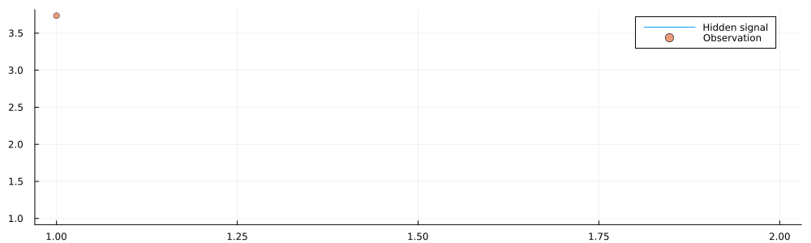

This example has been auto-generated from the examples/ folder at GitHub repository.
Infinite Data Stream
# Activate local environment, see `Project.toml`
import Pkg; Pkg.activate(".."); Pkg.instantiate();This example shows the capabilities of RxInfer to perform Bayesian inference on real-time signals. As usual, first, we start with importing necessary packages:
using RxInfer, Plots, Random, StableRNGsFor demonstration purposes we will create a synthetic environment that has a hidden underlying signal, which we cannot observer directly. Instead, we will observe a noised realisation of this hidden signal:
mutable struct Environment
rng :: AbstractRNG
current_state :: Float64
observation_precision :: Float64
history :: Vector{Float64}
observations :: Vector{Float64}
Environment(current_state, observation_precision; seed = 123) = begin
return new(StableRNG(seed), current_state, observation_precision, [], [])
end
end
function getnext!(environment::Environment)
environment.current_state = environment.current_state + 1.0
nextstate = 10sin(0.1 * environment.current_state)
observation = rand(NormalMeanPrecision(nextstate, environment.observation_precision))
push!(environment.history, nextstate)
push!(environment.observations, observation)
return observation
end
function gethistory(environment::Environment)
return environment.history
end
function getobservations(environment::Environment)
return environment.observations
endgetobservations (generic function with 1 method)Model specification
We assume that we don't know the shape of our signal in advance. So we try to fit a simple gaussian random walk with unknown observation noise:
@model function kalman_filter(x_prev_mean, x_prev_var, τ_shape, τ_rate, y)
x_prev ~ Normal(mean = x_prev_mean, variance = x_prev_var)
τ ~ Gamma(shape = τ_shape, rate = τ_rate)
# Random walk with fixed precision
x_current ~ Normal(mean = x_prev, precision = 1.0)
y ~ Normal(mean = x_current, precision = τ)
end
# We assume the following factorisation between variables
# in the variational distribution
@constraints function filter_constraints()
q(x_prev, x_current, τ) = q(x_prev, x_current)q(τ)
endfilter_constraints (generic function with 1 method)Prepare environment
initial_state = 0.0
observation_precision = 0.10.1After we have created the environment we can observe how our signal behaves:
testenvironment = Environment(initial_state, observation_precision);
animation = @animate for i in 1:100
getnext!(testenvironment)
history = gethistory(testenvironment)
observations = getobservations(testenvironment)
p = plot(size = (1000, 300))
p = plot!(p, 1:i, history[1:i], label = "Hidden signal")
p = scatter!(p, 1:i, observations[1:i], ms = 4, alpha = 0.7, label = "Observation")
end
gif(animation, "../pics/infinite-data-stream.gif", fps = 24, show_msg = false);
Filtering on static dataset
RxInfer is flexible and allows for running inference both on real-time and static datasets. In the next section we show how to perform the filtering procedure on a static dataset. We also will verify our inference procedure by checking on the Bethe Free Energy values:
n = 300
static_environment = Environment(initial_state, observation_precision);
for i in 1:n
getnext!(static_environment)
end
static_history = gethistory(static_environment)
static_observations = getobservations(static_environment);
static_datastream = from(static_observations) |> map(NamedTuple{(:y,), Tuple{Float64}}, (d) -> (y = d, ));function run_static(environment, datastream)
# `@autoupdates` structure specifies how to update our priors based on new posteriors
# For example, every time we have updated a posterior over `x_current` we update our priors
# over `x_prev`
autoupdates = @autoupdates begin
x_prev_mean, x_prev_var = mean_var(q(x_current))
τ_shape = shape(q(τ))
τ_rate = rate(q(τ))
end
init = @initialization begin
q(x_current) = NormalMeanVariance(0.0, 1e3)
q(τ) = GammaShapeRate(1.0, 1.0)
end
engine = infer(
model = kalman_filter(),
constraints = filter_constraints(),
datastream = datastream,
autoupdates = autoupdates,
returnvars = (:x_current, ),
keephistory = 10_000,
historyvars = (x_current = KeepLast(), τ = KeepLast()),
initialization = init,
iterations = 10,
free_energy = true,
autostart = true,
)
return engine
endrun_static (generic function with 1 method)result = run_static(static_environment, static_datastream);static_inference = @animate for i in 1:n
estimated = result.history[:x_current]
p = plot(1:i, mean.(estimated[1:i]), ribbon = var.(estimated[1:n]), label = "Estimation")
p = plot!(static_history[1:i], label = "Real states")
p = scatter!(static_observations[1:i], ms = 2, label = "Observations")
p = plot(p, size = (1000, 300), legend = :bottomright)
end
gif(static_inference, "../pics/infinite-data-stream-inference.gif", fps = 24, show_msg = false);
plot(result.free_energy_history, label = "Bethe Free Energy (averaged)")
Filtering on realtime dataset
Next lets create a "real" infinite stream. We use timer() observable from Rocket.jlto emulate real-world scenario. In our example we are going to generate a new data point every ~41ms (24 data points per second). For demonstration purposes we force stop after n data points, but there is no principled limitation to run inference indefinite:
function run_and_plot(environment, datastream)
# `@autoupdates` structure specifies how to update our priors based on new posteriors
# For example, every time we have updated a posterior over `x_current` we update our priors
# over `x_prev`
autoupdates = @autoupdates begin
x_prev_mean, x_prev_var = mean_var(q(x_current))
τ_shape = shape(q(τ))
τ_rate = rate(q(τ))
end
posteriors = []
plotfn = (q_current) -> begin
IJulia.clear_output(true)
push!(posteriors, q_current)
p = plot(mean.(posteriors), ribbon = var.(posteriors), label = "Estimation")
p = plot!(gethistory(environment), label = "Real states")
p = scatter!(getobservations(environment), ms = 2, label = "Observations")
p = plot(p, size = (1000, 300), legend = :bottomright)
display(p)
end
init = @initialization begin
q(x_current) = NormalMeanVariance(0.0, 1e3)
q(τ) = GammaShapeRate(1.0, 1.0)
end
engine = infer(
model = kalman_filter(),
constraints = filter_constraints(),
datastream = datastream,
autoupdates = autoupdates,
returnvars = (:x_current, ),
initialization = init,
iterations = 10,
autostart = false,
)
qsubscription = subscribe!(engine.posteriors[:x_current], plotfn)
RxInfer.start(engine)
return engine
endrun_and_plot (generic function with 1 method)# This example runs in our documentation pipeline, which does not support "real-time" execution context
# We skip this code if run not in Jupyter notebook (see below an example with gif)
engine = nothing
if isdefined(Main, :IJulia)
timegen = 41 # 41 ms
environment = Environment(initial_state, observation_precision);
observations = timer(timegen, timegen) |> map(Float64, (_) -> getnext!(environment)) |> take(n) # `take!` automatically stops after `n` observations
datastream = observations |> map(NamedTuple{(:y,), Tuple{Float64}}, (d) -> (y = d, ));
engine = run_and_plot(environment, datastream)
end;The plot above is fully interactive and we can stop and unsubscribe from our datastream before it ends:
if !isnothing(engine) && isdefined(Main, :IJulia)
RxInfer.stop(engine)
IJulia.clear_output(true)
end;